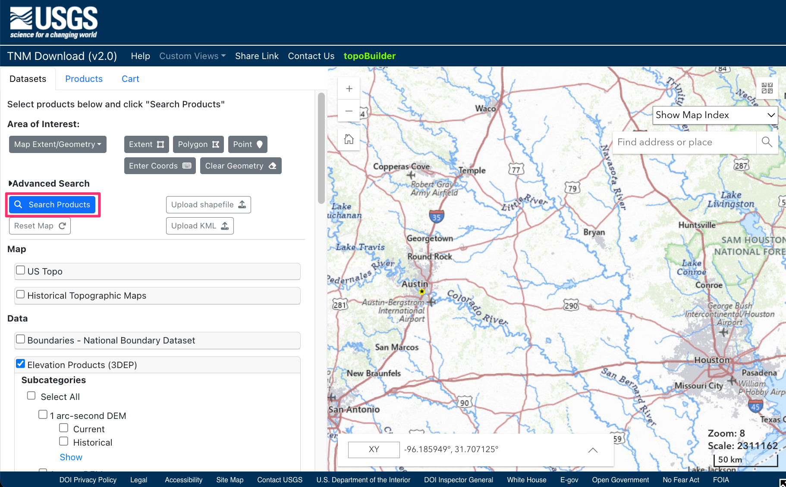
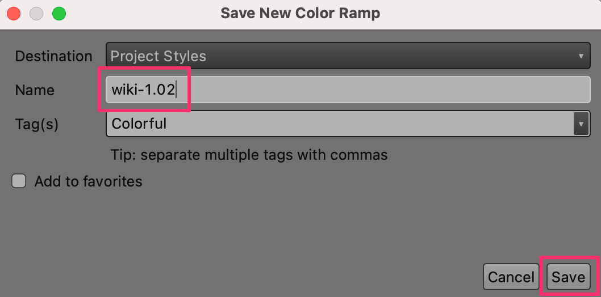
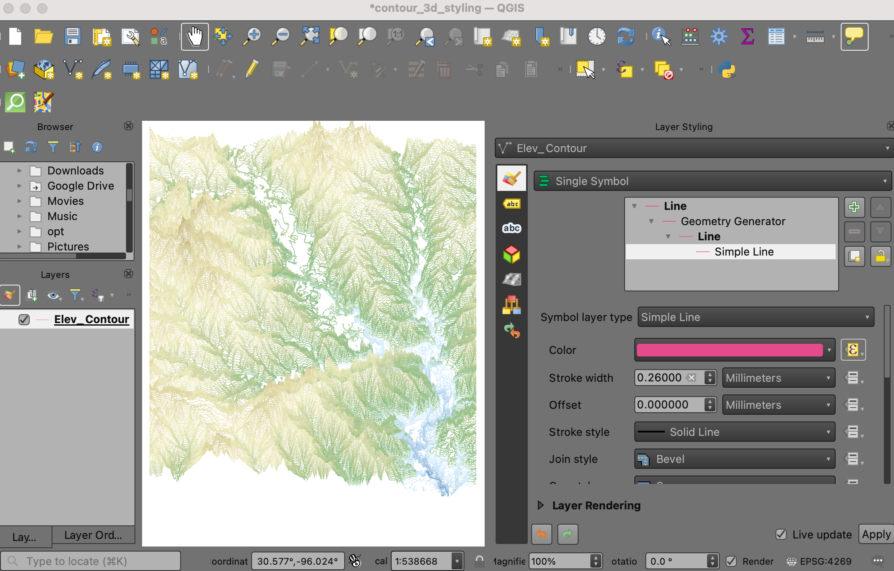

Contouren opmaken in 3D (QGIS3)¶
Bijgedragen door: Steven Kim
In de vorige handleiding, Een netwerk van rivieren opmaken met expressies (QGIS3) gebruikten we expressies om een netwerk van rivieren te filteren en op te maken. In deze handleiding zullen we werken met een gegevensset met contouren en die opmaken met expressies om het een 3D-effect te geven.
Overzicht van de taak¶
We zullen een symboollaag geometrie-generator gebruiken om dynamisch een verschuiving toe te passen op de contouren en dan een kleurverloop toepassen om het uiterlijk van een 3D-kaart te maken.

De gegevens ophalen¶
De National Map is een samenwerking tussen de U.S. Geological Survey (USGS) en andere partners om topografische informatie te verbeteren en te leveren voor de natie. We zullen een gegevensset met contouren downloaden vanuit de downloader van The National Map.
Bezoek de TNM Download v2. Blader naar uw gebied van interesse. Voor deze handleiding zullen we de contouren downloaden voor een gebied rondom Austin, Texas.

Zoek, in de downloader, naar de gegevensset
Elevation Products(3DEP)en selecteer het vak om alle sub-categorieën te zien. Selecteer alleen de categorieContours (1:24,000-scale). Onder File Formats, selecteerGeoPackage.

Klik op de blauwe knop Search Products om een lijst met overeenkomende bestanden te bekijken.

In de resultaten zult u het bestand
USGS NED 1/3 arc-second Contours for Austin E, Texasvinden. Klik op Download Link(ZIP) om het gezipte bestand voor GeoPackageELEV_Austin_E_TX_1X1_GPKG.zipte downloaden.

U kunt het zip-bestand direct downloaden vanaf ELEV_Austin_E_TX_1X1_GPKG.zip
Gegevensbron [USGS]
Notitie
U kunt ook contouren generen vanuit elke DEM-laag en die gebruiken in plaats van de contouren die we hier gebruiken. Bekijk onze handleiding Werken met gegevens over het terrein (QGIS3) voor stap-voor-stap instructies.
Procedure¶
Pak het bestand ELEV_Austin_E_TX_1X1_GPKG.zip uit op uw computer. Zoek het resulterende bestand ELEV_Austin_E_TX_1X1_GPKG.gpkg op in de QGIS Browser en vergoot het. Selecteer de laag Elev_Contour en sleep die in het kaartvenster.

Een nieuwe laag Elev_Contour zal nu worden geladen en u zou de contourlijnen moeten kunnen zien.

Klik met rechts op de laag Elev_Contour en kies Attributentabel openen. U zult zien dat het veld
contourelevationde waarde voor de hoogte voor elke contourlijn bevat. Deze veldnaam is belangrijk en wordt gebruikt in de expressies in volgende stappen.

We zijn nu klaar om de contouren op te maken. Voordat we doorgaan moeten we eerst een geschikt kleurverloop toevoegen voor het kleuren van de hoogten. Als u het kleurverloop wiki-1.02 al hebt toegevoegd voor onze vorige handleiding Een geblokte kaart van de wereld maken (QGIS3), kunt u doorgaan naar Stap 9. Klik op Extra in de menubalk en selecteer Stijlmanager.

Klik op het plusteken Item toevoegen aan de onderzijde en selecteer .

Scroll naar beneden door de kleurverlopen totdat u wiki-1.02 vindt. Er zouden er meerdere kunnen zijn met dezelfde naam, kies er gewoon een en klik op OK.

Voer, in het venster Nieuw kleurverloop opslaan, de waarde
wiki-1.02in als de Naam.

Klik op Opslaan om het venster te verlaten en klik dan op Sluiten om de Stijlmanager te verlaten. Nu is het kleurverloop wiki-1.02 beschikbaar om in uw projecten te gebruiken en kunnen we doorgaan.

Nu kunnen we de contouren gaan opmaken. Selecteer de laag
Elev_Contouren klik op de knop Paneel Laag opmaken openen. Selecteer Doorgetrokken lijn voor toegang tot zijn eigenschappen.

Schakel Symboollaagtype van Doorgetrokken lijn naar Geometrie-generator. Die symboollaag maakt het voor ons mogelijk om dynamisch de geometrie van objecten op de laag te wijzigen met een expressie.

Voer, in het invoervak, deze expressie in om elke contourlijn op de Y-as te vertalen op zijn waarde voor de hoogte. We gebruiken de functies
minimum()enmaximum()om het bereik voor de waarden te zoeken in de kolom contourelevation en de functie scale_linear() om de hoogte lineair op schaal te brengen vanuit het minimum tot het maximum voor het gewenste bereik voor de verschuiving voor Y tussen 0 tot en met 0.2 graden. Als uw laag met contouren in een CRS staat dat andere eenheden heeft dan graden, zorg er dan voor dat deze waarden op de juiste wijze worden aangepast. Voer de expressie in en klik op OK.
translate($geometry,0,scale_linear("contourelevation", minimum("contourelevation"),maximum("contourelevation"),0,0.2))
Onder Geometrie-generator in het venster Symbool, selecteer de laag Doorgetrokken lijn om toegang te krijgen tot zijn eigenschappen. Klik op de knop Data-bepaalde ‘override’ voor Kleur en selecteer het menu Bewerken.

Dat brengt het dialoogvenster Expressiebouwer naar voren voor de kleur van de lijn. Voer deze expressie in om de contourlijnen te kleuren op hun waarde contourelevation uit het kleurverloop wiki-1.02. We moeten de waarden voor de hoogten in kaart brengen zoals zij worden verwacht door het kleurverloop (0 tot en met 1). In plaats van de eerder gebruikte functie scale_linear, gebruiken we de functie scale_polynomial om de waarden op schaal te brengen op een niet-lineaire manier. Klik op OK als de expressie is ingevoerd.
ramp_color('wiki-1.02',scale_polynomial("contourelevation", minimum("contourelevation"),maximum("contourelevation"), 0,1,0.5))
U zou een 3D-weergave van de contouren moeten zien, gekleurd op hoogte. Experimenteer met de kleuring en de expressies voor het op schaal brengen om verschillende artistieke weergaven van het landschap te onthullen.

If you want to give feedback or share your experience with this tutorial, please comment below. (requires GitHub account)